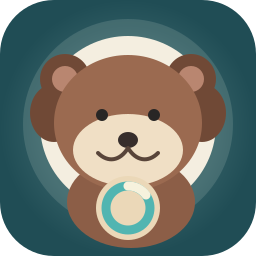

Five-hour focus
The otter and menu bar show the five-hour remaining percentage. Click for seven-day quota and manual reset credits when Codex provides them.

Quota Otter · 额度水獭See your five-hour Codex quota in the menu bar. Hover over the otter for the next estimated reset, or click to see more.
Requires a separately installed Codex CLI and an eligible ChatGPT account for live quota. Quota Otter is independently developed and is not affiliated with OpenAI.
The otter and menu bar show the five-hour remaining percentage. Click for seven-day quota and manual reset credits when Codex provides them.
Choose low-quota and estimated-reset notifications. The app confirms recovery only after a fresh quota check.
Keep the built-in otter or import a PNG, JPEG, or GIF character. Position the pet on your preferred display.
额度水獭在菜单栏展示 Codex 的 5 小时剩余额度。悬停查看预计重置，点击查看 7 天额度和服务端提供的手动重置次数。低额度与预计重置提醒由 macOS 在本机发送。
可使用内置水獭，或导入自己的 PNG、JPEG、GIF 角色。实时额度需要单独安装并登录 Codex CLI，以及具备相应资格的 ChatGPT 账号。本应用由独立开发者制作，与 OpenAI 无关联；购买应用不包含 ChatGPT 或 Codex 订阅。